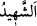

erkek kölesiyle beraber hacca ve sefere gitmesi câiz olmaz. Ebû Hanîfe, şehvet ve
fitneden emin olunursa kölenin hanım efendisinin yüzüne ve ellerine bakmasına cevaz
vermiştir. Ancak bu kadar bir bakmanın câiz olması, mahremiyeti gerektirmez. Bu
konuyla ilgili bazı meseleler Nur sûresinde geçti. Oraya bakarsan mutlu olursun.
Ey Peygamber hanımları! Allâh’ın size emrettiği perde arkasından konuşma konusunda
“Allah’tan korkun” ki bu zikredilenlerden başkası sizi görmesin. Bu konuda gücünüz
yettiğince ihtiyatlı olun.
Kâşifî der ki: “Allah Teâlâ, burada emrin şiddetini artırmak için üçüncü şahıs
siygasından muhâtap siygasına dönüp şöyle emir ve ferman buyurdu: “Ey kadınlar,
perdede karar kılın, Allah’tan korkun ve bilmediğiniz kimselerle perde arkasından
konuşun.”
“Şüphesiz Allah, her şeye şâhiddir.” Hiçbir gizli söz ve iş O’na gizli kalmaz. O’nun
ilminde zamanlar, mekanlar ve haller farklılık göstermez/birbirinden ayrılmaz.
Madem ki Hak Teâlâ her şeye şâhid oldu,
Sizi her an görmektedir.
Nâmahremlerden (yabancı kadınlardan) gözünüzü kapatın,
Vehim ve şüphe yolundan uzak olun.
Hayâ ve vakar dizinin ardında,
Sabır ve kararla güzelce oturun.
et-Te’vîlâtü’n-Necmiyye’de şöyle denilmiştir: “Allah bu âyet ile Hz. Peygamber
(s.a.)’in hanımlarının gönüllerini alışageldikleri örf ve adetten koparıp şerîatın
emrettiklerine (ma‘rûf) ve ibâdetten farz kılınanlara naklettikten sonra onların
kalblerinin teskin edildiğine işâret etmiştir. Onların yaralarını iyileştirmek için bu
ruhsatı indirerek onlara ve akrabalarına lütuf ve ihsanda bulunmuştur. Bununla beraber
onları ihtiyat gösterme konusunda serbest bırakmamış ve (âyette sayılan) erkekler ve
başkaları konusunda havâtırdan, nefislerin meyil ve arzularından korunarak “Allah’tan
korkun; şüphesiz Allah,” nefislerin amellerinden ve kalblerin hallerinden “her şeye
şâhiddir” hâzırdır ve onlara nâzırdır, buyurmuştur.
Ebü’l-Abbâs Fâsî şöyle demiştir: “__WORD__ bilinen, görünen ve işitilen hiçbir şey
kendisinden gâib/saklı olmayan hâzır demektir. Murâkabe üzere Allâh’ın kuluna şâhid
olduğunu bilen kimseyi Allah yasakladığı yerde görmez, emrettiği yerin dışında da
bulmaz. Başkasına ihtiyaç duymadan kendi ilmi ve müşâhedesi O’na yeter. Çünkü
dünyâda da âhirette de hiçbir şey Allah Teâlâ’dan gizli kalmaz. O, kıyamet günü
kullarından görüp bildiği şeylere şâhidlik eder.”
Mekânda ve o mekâna yerleşende bir zerre yoktur
Ki O’nun ilmi onu kuşatabilsin.
Çöllerdeki kumun sayısı,